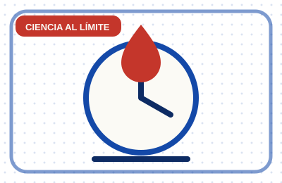

Ciencia al límite
12 raciones por página

Ciencia al límite
¿Y si tu cerebro no crea la consciencia? 5 revelaciones de la física cuántica que cambian nuestra noción de la mente
1. Introducción: El enigma de la experiencia consciente ¿Cómo es posible que la materia bruta de nuestro organismo genere la experiencia subjetiva de ser «tú»? Durante décadas, la postura dominante en la neurociencia ha sostenido que la consciencia es un simple subproducto.

Ciencia al límite
¿Por qué tu segundo dedo del pie es más largo? La fascinante (y sorprendente) historia genética y artística que llevas en los pies
Quítate el zapato por un momento o recuerda la última vez que observaste detenidamente tu pie descalzo. Mira tu segundo dedo, el que está justo al lado del dedo gordo, y fíjate si se extiende un poco más allá, aunque sea por un par de milímetros. Si es así, llevas en tu cuerpo.

Ciencia al límite
El pulpo gigante que superaba a un calamar
Nanaimoteuthis haggarti pudo medir hasta 19 metros en el Cretácico: un pulpo fósil reconstruido casi solo a partir de mandíbulas. Los pulpos no suelen dejar un gran archivo fósil: son blanditos, discretos y bastante malos para convertirse en piedra.

Ciencia al límite
El asteroide cacahuete que gira como una peonza
La sonda Lucy de la NASA vio que Donaldjohanson no rota como una piedra normal: cabecea en dos ejes y conserva señales de agua antigua. Donaldjohanson, un asteroide del cinturón principal, tiene nombre de paleoantropólogo y forma de aperitivo sospechoso.

Ciencia al límite
1.121 especies marinas nuevas en un año
Ocean Census anunció 1.121 especies previamente desconocidas, incluidas criaturas de zonas remotas y profundidades de hasta 6.575 metros. El océano sigue siendo un territorio medio invisible para la ciencia. En una sola campaña anual, Ocean Census anunció 1.121 especies.

Ciencia al límite
El escorpión gigante que dominaba tierra y agua
Praearcturus gigas medía más de un metro y pudo ser uno de los primeros grandes depredadores de la tierra firme hace 415 millones de años. Antes de que la tierra firme se llenara de bosques, reptiles y dramas de documental, ya había un bicho con pinzas haciendo valer su tamaño.

Ciencia al límite
Un gusano que vive dentro de un castillo de cristal
Un gusano simbiótico fue descrito viviendo dentro de una esponja de vidrio con esqueleto de sílice cristalina. Entre los hallazgos de Ocean Census destaca Dalhousiella yabukii, un gusano poliqueto que vive dentro de las cámaras de una esponja de vidrio.

Ciencia al límite
Los suimangas sí beben néctar con pajita
A diferencia de los colibríes, los suimangas crean un sello con la lengua y el pico para succionar néctar como diminutos fontaneros florales. Los colibríes tienen fama de beber néctar como si llevaran pajita incorporada, pero la película es más rara: según Berkeley, en realidad.

Ciencia al límite
Una superfamilia nueva en el fondo del Pacífico
En la zona Clarion-Clipperton se describieron 24 especies nuevas de anfípodos y una superfamilia nueva. Investigadores describieron 24 nuevas especies de anfípodos en la zona Clarion-Clipperton, una región gigantesca entre Hawái y México.

Ciencia al límite
El dinosaurio con pinchos soldados al hueso
Spicomellus afer, el anquilosaurio más antiguo conocido, tenía espinas óseas fusionadas a huesos como las costillas y un collar de púas descomunal. Spicomellus afer ya era raro cuando se describió a partir de una costilla con espinas pegadas directamente al hueso.

Ciencia al límite
La posible estrella agujero negro del universo temprano
El James Webb ayudó a identificar un objeto rojo que podría ser un agujero negro envuelto en una nube estelar de hidrógeno. Astrónomos del MIT describieron MoM-BH*-1, un punto rojo muy antiguo que parece del tamaño del sistema solar pero emite demasiada energía para una estrella.

Ciencia al límite
El número 137 que obsesionó a Pauli
La constante de estructura fina parece un número sencillo, pero conecta la luz, los electrones y uno de los grandes misterios de la física. Hay números que aparecen en una cuenta y desaparecen. El 137 no tuvo esa educación: durante décadas persiguió a Wolfgang Pauli, premio.
Reserva mesa fija
Cada mañana te mandamos la curiosidad del día por correo. Un email, un dato, cero relleno. Y los domingos, el enigma con la solución de la semana.